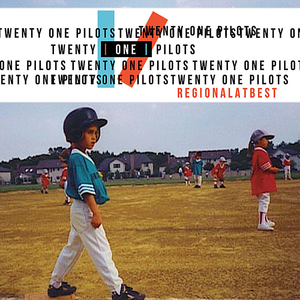
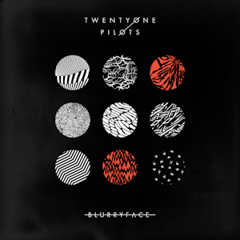
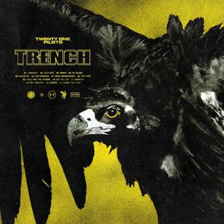
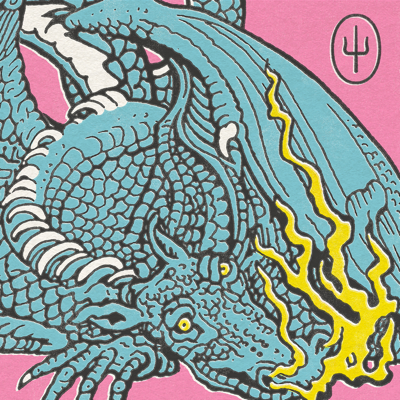
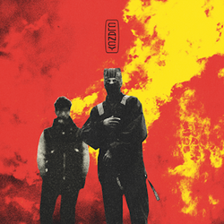
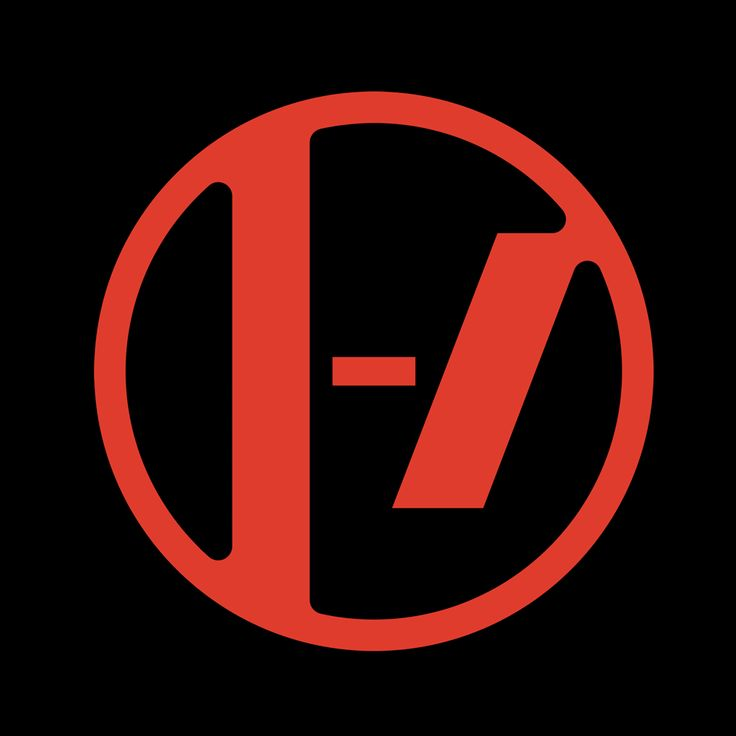

💿 Discografia

Twenty One Pilots (2009)

Regional at Best (2011)

Vessel (2013)

Blurryface (2015)

Trench (2018)

Scaled and Icy (2021)

Clancy (2024)


Twenty One Pilots é uma banda norte-americana formada em 2009, em Columbus, Ohio, pelos músicos Tyler Joseph e Josh Dun. O grupo é conhecido por misturar diversos estilos musicais, como pop, rock, hip hop, eletrônica e indie, criando um som autêntico e difícil de rotular.
A banda ganhou destaque mundial com o álbum “Blurryface” (2015), que trouxe sucessos como “Stressed Out”, “Ride” e “Tear in My Heart”. A canção “Heathens”, lançada para a trilha sonora do filme Esquadrão Suicida (2016), também se tornou um grande hit.
As letras do Twenty One Pilots costumam abordar temas profundos, como saúde mental, insegurança, identidade e esperança, conectando-se intensamente com seus fãs — conhecidos como o Clique. A estética visual dos álbuns e shows da banda é marcante, combinando simbolismos, cores e narrativas que evoluem a cada era.




